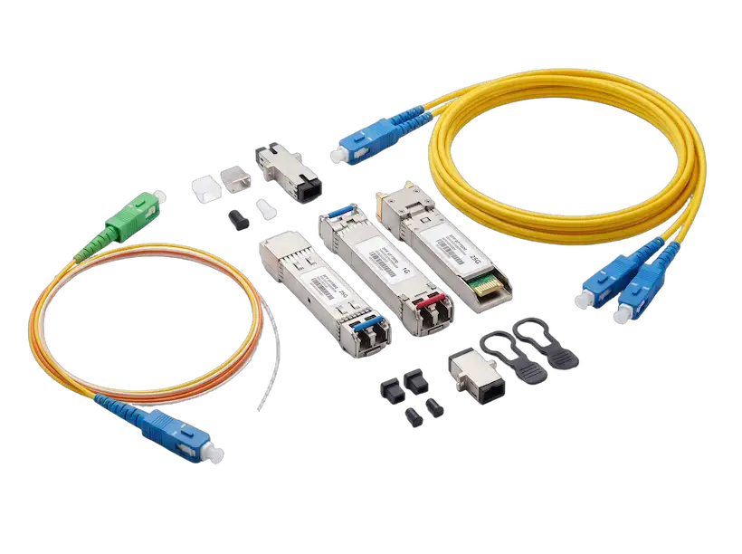

Под ваш объект
Офис, склад, магазин или несколько филиалов. Рассчитаем, сколько нужно подключений и точек Wi-Fi, чтобы связь была везде и с запасом на рост.
Построим новую сеть или модернизируем ту, что у вас уже есть. Подберём полный комплект сетевого оборудования и кабелей под любые задачи.

Мы не продаём оборудование ради продажи. Мы спрашиваем, какая у вас площадь, сколько сотрудников и что нужно от сети. Смотрим план помещения и предлагаем решение, которое не придётся переделывать через полгода.
Офис, склад, магазин или несколько филиалов. Рассчитаем, сколько нужно подключений и точек Wi-Fi, чтобы связь была везде и с запасом на рост.
Подберём оборудование так, чтобы оно работало вместе без сюрпризов. Заранее проверим, что устройства совместимы между собой и с тем, что у вас уже стоит.
Соберём шкаф, проложим кабель, настроим сеть и покажем, как ей пользоваться. Дадим гарантию и будем на связи, если понадобится помощь.
Если не нашли нужное, опишите свою задачу, и мы подберём подходящую замену. Нажмите «Заказать», и товар попадёт в вашу заявку на главной странице.

ELTEX · УПРАВЛЯЕМЫЙ КОММУТАТОР

QTECH · КОММУТАТОР ДЛЯ ПОДКЛЮЧЕНИЯ УСТРОЙСТВ

HUAWEI · РОУТЕР ДЛЯ ФИЛИАЛОВ

ELTEX · WI-FI

ELTEX · УПРАВЛЯЕМЫЙ КОММУТАТОР

СОЕДИНЕНИЕ ПО ОПТИЧЕСКОМУ КАБЕЛЮ
Чтобы не переплатить и не переделывать. Детали и цены пришлем в по почте.
| Коммутаторы | Для подключения компьютеров, телефонов и камер обычно берут модели на 24 или 48 портов. Если к ним нужно подключить телефоны, камеры или точки Wi-Fi, выбираем модели с питанием устройств по сетевому кабелю (PoE). Для связи между коммутаторами в крупной сети нужны более быстрые порты, 10 или 25 Гбит/с. |
|---|---|
| Маршрутизаторы | Для офиса обычно достаточно двух портов для выхода в интернет и защищённого соединения между офисами (VPN). Для филиалов добавляем запасной канал связи. Для сети с большим числом офисов смотрим, сколько защищённых соединений и какую скорость выдерживает устройство. |
| Wi-Fi | Считаем по плану помещения, а не по количеству точек. Wi-Fi 6 берём, если в сети много людей и устройств. Тип точек подбираем под помещение: офис, склад или улица. |
| Оптика и кабель | Обычный сетевой кабель работает на расстоянии до 100 метров, дальше нужна оптика. Модули для оптики подбираем под модель вашего коммутатора, чтобы всё работало вместе. |
| Питание устройств по кабелю | Складываем потребление всех точек Wi-Fi, телефонов и камер и берём коммутатор с запасом по мощности примерно в 20%. |
| Шкафы и монтаж | Шкаф стандарта 19 дюймов, настенный или напольный, с вентиляцией, патч-панелями и организаторами для кабелей. Монтируем аккуратно и маркируем каждый порт. |
Пришлите план помещения или просто опишите задачу. Мы подготовим схему и расчёт стоимости.